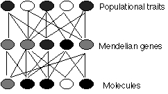

Résumé : La biologie ne peut pas être réduite à la physique, même si toutes les entités biologiques sont des entités physiques, et rien de plus. La sélection de groupe n'est pas une théorie évolutionniste acceptée, mais le tri de groupe l'est.
La philosophie des sciences, et les critiques de la théorie de l'évolution en particulier, ont été motivées par la vision selon laquelle la physique, ou peut-être les mathématiques, constituent le modèle même d'une discipline scientifique moderne. Si ce n'est pas comme la physique d'une certaine manière, alors ce n'est pas de la science.
Comme il n'est pas surprenant, de nombreux biologistes n'étaient pas satisfaits de cette vision de leur travail, perçu comme une sorte de « collection de timbres » [note 7]. Ernst Mayr [1970, 1982] a attaqué cette présomption philosophique, en particulier l'idée que la biologie n'est qu'une forme de physique, ou peut-être de chimie. Les philosophes, eux aussi, ont commencé à lancer des attaques similaires [Hull 1974, voir Sterelny 1995 pour un compte rendu].
La vision de la science de la philosophie dans les années 60 était généralement réductionniste [Nagel 1961]. Cela signifiait que, en principe, les objets et les processus d'un niveau de science étaient constitués des objets du niveau immédiatement inférieur, aboutissant à la physique subatomique. Ainsi, la biologie se réduisait à la chimie, et la chimie se réduisait à la physique. Ce type de réduction est appelé réduction ontologique. Ceux qui acceptent cette forme de réductionnisme sont appelés 'physicalistes'.
Un autre type de réduction — souvent confondu avec la réduction ontologique — est la réduction explicative ou épistémique. Il s'agit de l'opinion selon laquelle les propriétés d'un niveau doivent être idéalement expliquées comme les effets de processus au niveau immédiatement inférieur. Cette thèse est fermement rejetée par de nombreux philosophes et biologistes, et soutenue par d'autres [par exemple, Dennett 1995]. Hull [1974] a soutenu qu'il est en principe impossible de réduire, par exemple, la génétique des populations à la génétique mendélienne, et la génétique mendélienne à la génétique moléculaire, car chaque niveau est le résultat de nombreuses entités interagissant au niveau inférieur, et de nombreuses entités au niveau supérieur résultent d'une seule entité au niveau inférieur :

Le problème de Hull est parfois appelé le Problème du Beaucoup au Beaucoup, en hommage à un ancien problème philosophique, le Problème de l'Un et du Beaucoup. De nombreux gènes mendéliens sont constitués de nombreuses molécules d'ADN, et de nombreux traits populationnels sont codés par de nombreux gènes mendéliens. Une réduction simple ne fonctionnera pas. Ce que Williams [1966] a appelé un « gène évolutif » n'est qu'une unité d'hérédité qui est « visible » pour la sélection, et il peut s'agir d'une entité à n'importe quel niveau - une molécule, un gène mendélien ou même un trait populationnel.
La réduction entre dans le débat évolutionniste sous la forme de la question de la sélection de groupe. En 1962, Wynne-Edwards a proposé que certaines populations d'oiseaux régulent la taille de leur couvée (le nombre d'œufs pondus) en temps difficile pour bénéficier à la population dans son ensemble, même si cela était préjudiciable à la « fitness darwinienne » des oiseaux individuels. Williams [1966] a répondu par un argument selon lequel la sélection des individus ne pouvait expliquer cela et d'autres formes de prétendue sélection de groupe, et que si la sélection de groupe survenait, elle n'était pas très importante.[note 8] Une décennie plus tard, Dawkins [1976] a radicalisé cette vision en affirmant que les gènes, et les gènes seuls, sont les « unités de sélection », et que tous les effets biologiques dans l'évolution sont le résultat de ces entités de « niveau inférieur ».
Le gène-centrisme n'est pas l'idée que seuls les gènes existent, ou même que seuls les gènes ont des effets, mais que seuls les gènes sont sélectionnés (c'est-à-dire qu'ils sont importants sur le plan évolutif). La manière dont Dawkins l'a formulé, comme en témoigne le titre The Selfish Gene, a été mal interprétée pour signifier que les organismes sont sans importance. Une analyse plus éclairée a développé l'idée que si l'évolution par sélection est généralisée, alors en utilisant la distinction propre à Dawkins entre réplicateurs et véhicules (ou l'affinement de Hull, les interacteurs), la sélection peut se produire à des niveaux supérieurs au gène, voire supérieurs à l'organisme.
Ceci contredit les notions simplistes selon lesquelles l'évolution est définie comme un changement dans les fréquences alléliques. C'est ce que Wimsatt a appelé la définition de l'évolution par « comptabilité », et c'est vrai dans la mesure où cela va, mais ce n'est pas tout ce qui est intéressant dans l'évolution. Peu de biologistes sont encore de simples réductionnistes, bien que Williams ait écrit une défense limitée du réductionnisme comme stratégie méthodologique [1985], dans laquelle il a soutenu que le réductionnisme était l'hypothèse nulle et qu'il était lourd de l'abandonner. Dennett [1995] a affirmé que le réductionnisme n'avait pas encore échoué, en particulier dans les explications évolutives utilisant la sélection.
Si les niveaux évolutifs au-dessus du gène peuvent être sélectionnés, sont-ils adaptés ? Plusieurs auteurs ont suivi Wynne-Edwards sur ce point. Cependant, les versions récentes ont abandonné l'idée que les groupes sont sélectionnés, pour adopter la vision selon laquelle ils sont triés, car la sélection exige que l'entité en question se reproduise, et ce de manière différentielle par rapport aux autres concurrents. Cela convient pour les gènes, et peut-être pour les organismes, mais pour les espèces ? Même pour les phylums ? Les groupes ne se reproduisent pas, ils se divisent. Les travaux récents de Gould, Eldredge et Vrba [références dans Sterelny 1995] modifient cette idée, passant de la sélection d'espèces au tri d'espèces, ce que Vrba appelle l'hypothèse de l'effet. C'est une vision qui bénéficie désormais d'une large acceptation parmi les biologistes, y compris Williams [1992]. Les groupes sont censés survivre aux événements d'extinction de manière différentielle, en fonction des adaptations de leurs organismes composants, de sorte que ce sont les organismes qui sont adaptés, et non les groupes.